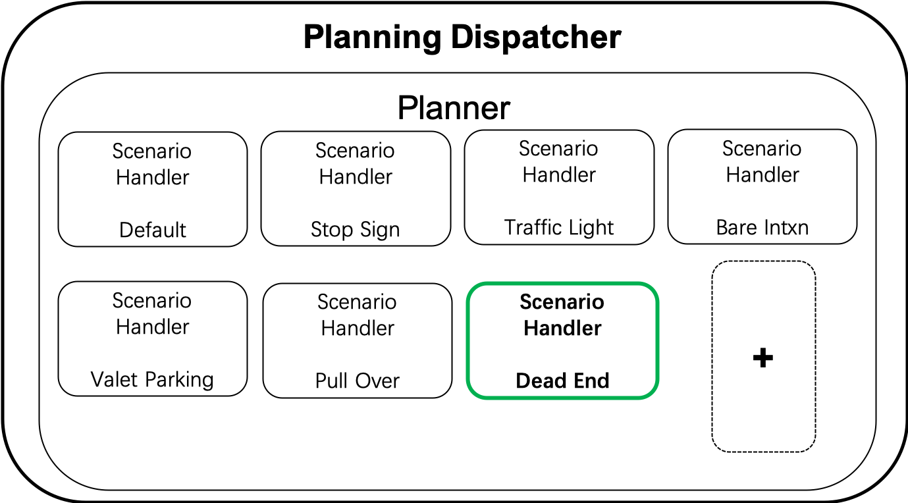
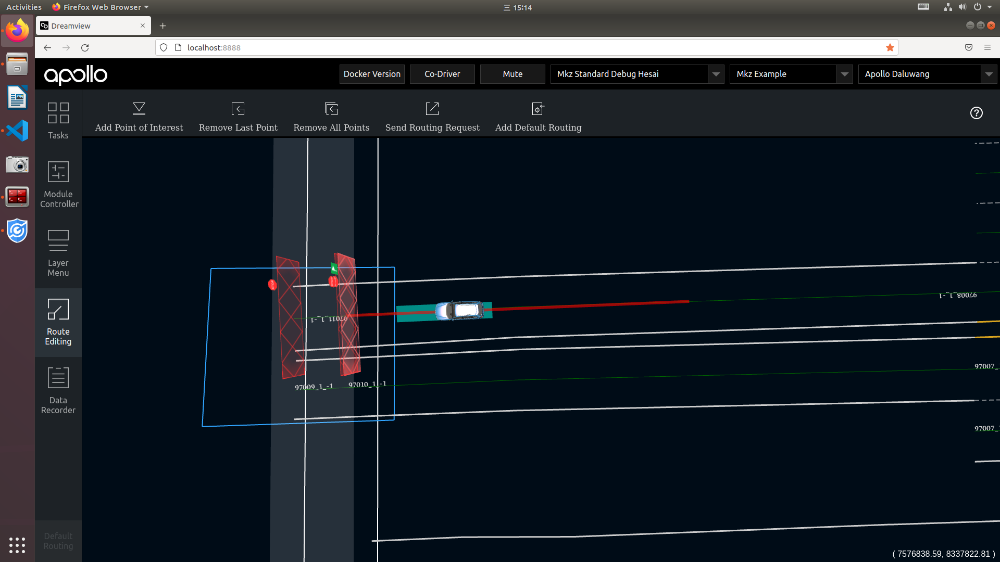
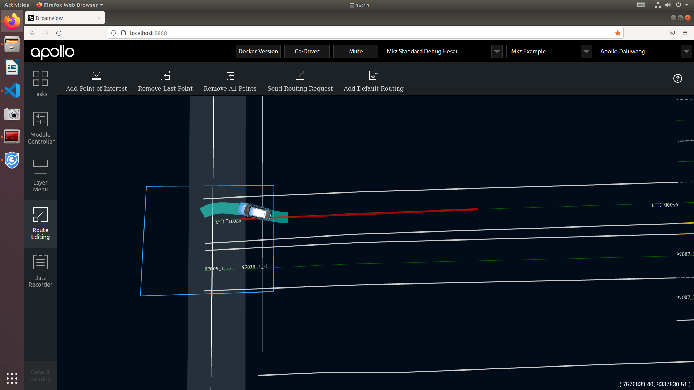
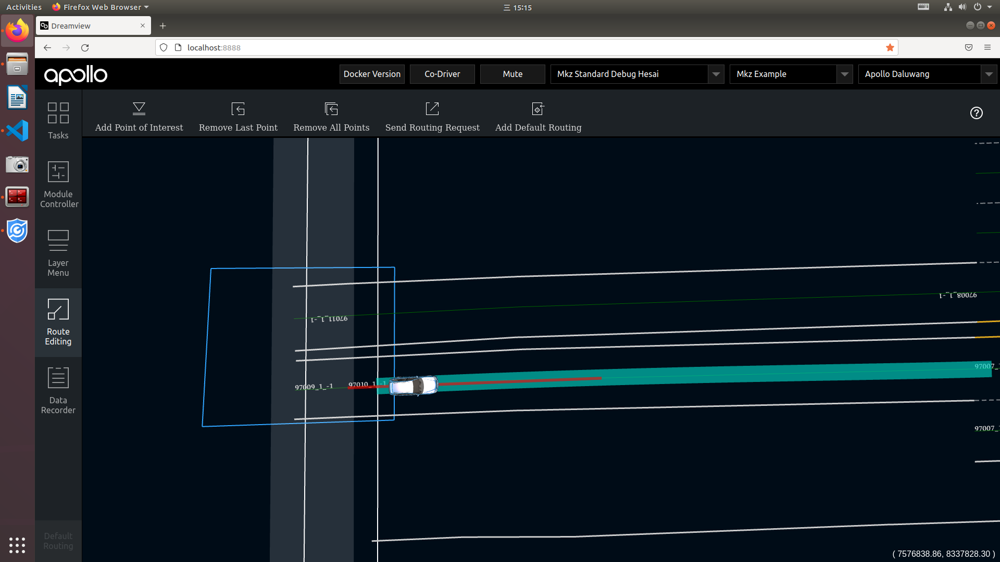
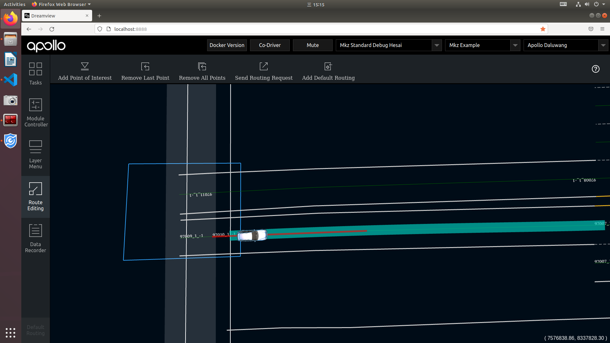
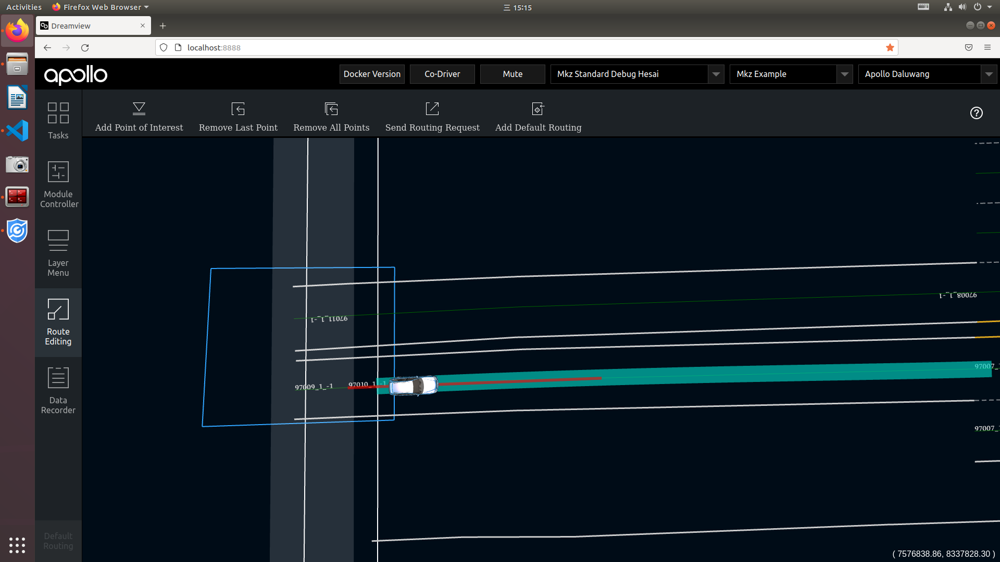

Planning
Prediction
Apollo7.0相对之前的版本，本次新增了断头路场景，增加了”三点掉头”功能，增加了驶入驶出的能力，扩展了城市路网运营边界。”三点掉头”功能 基于open space planner框架，包含以下几个部分：断头路场景转换、开放空间ROI构建、掉头轨迹规划。
输入信息：定位、感知、预测、高精地图、路由、任务管理模块。
输出信息：控制模块可执行的顺滑无碰撞轨迹。

  

 
